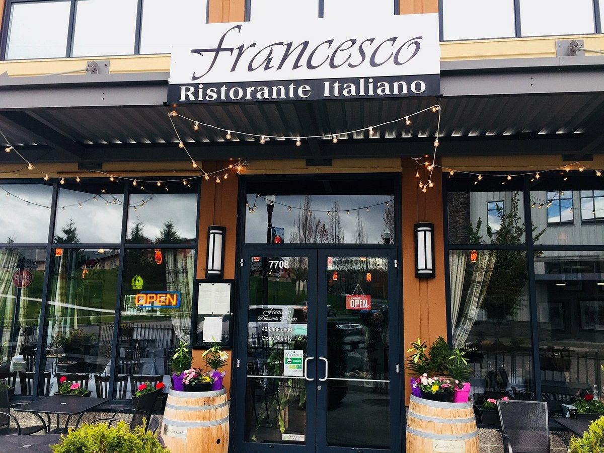
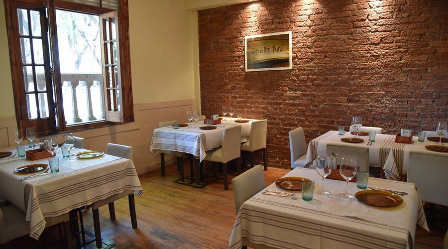
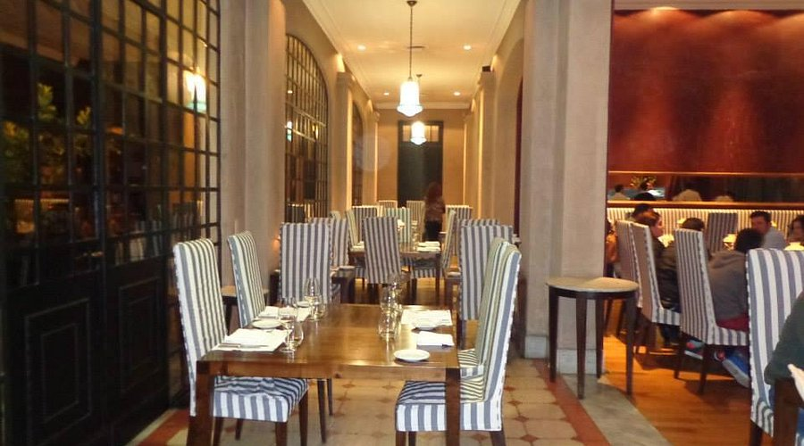
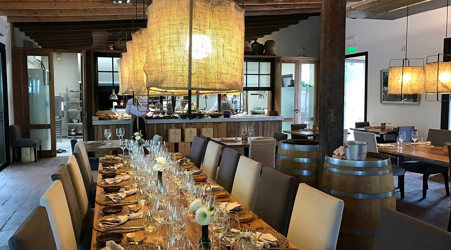
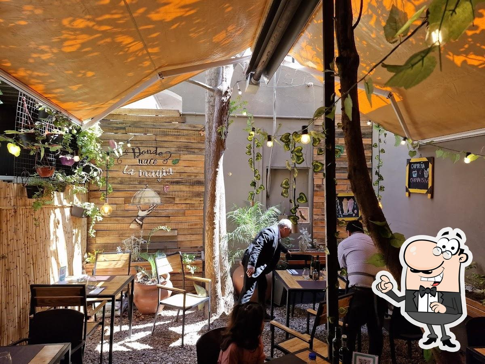
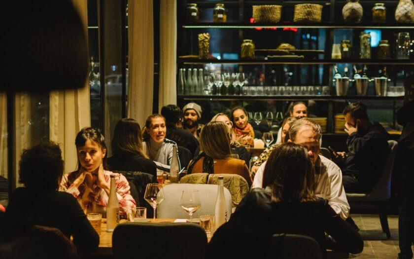

Francesco Ristorante

Ubicado en el centro de Mendoza, este restaurante italiano se destaca por su ambiente acogedor y platos tradicionales que respetan recetas familiares. Perfecto para quienes buscan disfrutar de una experiencia auténtica y de alta calidad.
Testimonios de TripAdvisor
"Lo más más. En mucho tiempo no había salido a cenar a un lugar así. Entrada, plato principal, y postre deliciosos. Mozos súper atentos."
"Dudo que haya algo mejor en Mendoza. El lugar es precioso. La comida, elaborada por gente que sabe. Todo es fresco, sabroso, impecable."
"Muy buena elección para amantes cocina italiana con una excelente ubicación cerca del centro."
Azafrán Resto
Una joya gastronómica en la ciudad de Mendoza, famosa por su carta de vinos y su enfoque en combinar sabores locales con técnicas contemporáneas. Su servicio y ambiente lo convierten en una parada obligatoria para los amantes de la buena comida.

Testimonios de TripAdvisor
"Optamos por el menú de seis tiempos, y la experiencia fue excelente."
"Lo mas importante, que es la comida, excelente. Sabores muy equilibrados y combinaciones nuevas y sorprendentes. La creatividad del chef es indiscutible."
"El mejor restaurante. Una experiencia única de sabores y la mejor atención."
Casa Vigil
En Chachingo, este restaurante combina maridajes exquisitos de vinos de alta gama con una cocina que resalta ingredientes regionales en un entorno íntimo y único.

Testimonios de TripAdvisor
"La degustación en Casa Vigil fue totalmente memorable. Nos ha creado sin duda una expectativa muy alta para experiencias futuras."
"Una gran experiencia tanto por la Cata de vinos como por la comida de tres tiempos."
"Es un lugar hermoso, donde te atienden de maravilla, riquísima comida, y que podemos decir de los vinos! Todo el combo cierra perfecto."
Fuente y Fonda
Con un concepto inspirado en la comida casera, este restaurante ofrece platos abundantes servidos al estilo familiar, en un ambiente cálido que rememora la nostalgia del hogar.
Testimonios de TripAdvisor
"Una delicia a precios razonables. Comida abundante y con alma bien casera."
"Excelente lugar para cenar y compartir con amigos. Lo recomiendo gratamente."
"Platos sabrosos y abundantes. Precios correctos."
1884 Restaurante Francis Mallmann
Reconocido por su enfoque en las técnicas de cocción al fuego, este icónico restaurante en Godoy Cruz combina la tradición culinaria argentina con un toque sofisticado.
Testimonios de TripAdvisor
"No tenemos forma de describir esta experiencia gastronómica. El lugar, la comida, el maridaje, las atenciones y el ambiente no tienen comparación."
"Excelente experiencia! La comida deliciosa y los maridajes perfectos. Muy buen servicio por parte de todo el personal."
"El restaurante es increíble. Una casona hermosa reciclada y una comida espectacular."
Fogón Cocina de Viñedo
Ofrece una experiencia gastronómica elegante y contemporánea en la ciudad de Mendoza, destacando platos de autor que mezclan tradición y modernidad.
Testimonios de TripAdvisor
"Atención excelente acompañadO de comida espectacular así como los vinos."
"Que placer que cada vez que uno vuelve se lleva una mejor sorpresa."
"Un lugar hermoso, con comida riquísima y una atención increíble. Súper recomendable!"
Carolino Cocina
Este restaurante es conocido por su propuesta creativa y su enfoque en ingredientes frescos y locales, brindando un menú que sorprende con cada visita.
Testimonios de TripAdvisor
"El menú breve muy rico en relación precio y calidad. La atención hace la diferencia."
"La cena estuvo deliciosa. Las carnes en su punto, un vino excelente y un postre de tiramisú de pistacho que me dejó sorprendida."
"Excelente la relación precio calidad. El menú traía bife de chorizo y un mil hojas de papas excelentes."
Auténtico
Con una atmósfera relajada y moderna, este lugar ofrece una cocina honesta que pone en valor los sabores tradicionales mendocinos con un giro contemporáneo.
Testimonios de TripAdvisor
"Maravillosa cena del menú de pasos, muy abundante y exquisito."
"Increíble atención, la comida una delicia y el ambiente más que acogedor. Volvería una y mil veces, 100% recomendado."
Increíble lugar, muy buena atención. La milanesa de bife de chorizo es increíble, y los postres exquisitos. Muy recomendado."